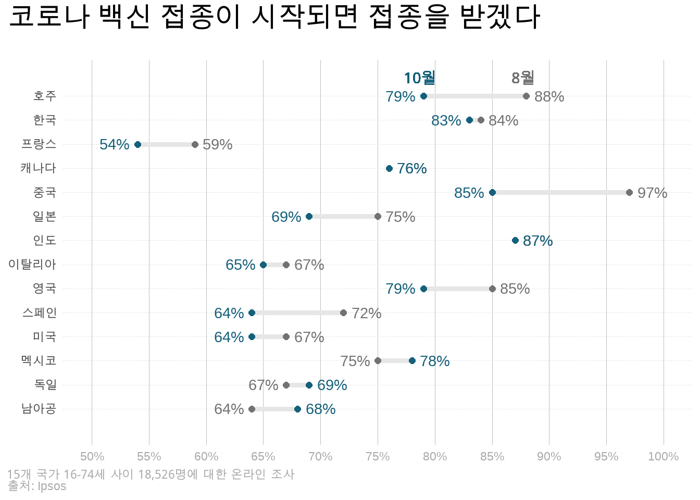

install.packages(c("ggtext", "glue"))12 웹프로그래밍을 응용한 데이터 스토리텔링 (심화)
앞 장의 말미에 ggplot을 이용해 조금 더 전문적인 스토리텔링을 위해 시각화를 개선할 수 있다는 이야기를 했습니다. 여러분이 직접 최종적인 시각화 결과물을 생산해야 하는 것이 아니라면 스토리텔링의 아이디어를 담당자에게 잘 전달하는 것으로 충분하겠지만, 직접 그래프를 만들어 내야 하는 상황이라면 우리가 앞 장 말미에 만들어낸 시각화 결과물로는 부족할 것입니다.
추가적인 시각화의 개선을 위한 기법에는 다양한 방식이 있을 수 있습니다. 여기서부터는 조금 더 고급 프로그래밍에 해당하기 때문에 상당 부분이 취향의 영역입니다. 여기서는 웹프로그래밍에서 사용하는 HTML, CSS 등의 요소를 이용해 시각화를 개선하는 방식을 취하겠습니다. 이는 이러한 방식이 다른 대안적인 방식에 비해 조금 더 직관적이기도 하고, 또 이미 웹프로그래밍에서 표준에 해당하는 기술을 응용하는 것이기 때문에 데이터 사이언스에 대한 지식과 상호 보완적인 면이 있기 때문이기도 합니다.
만약 여러분이 최종적인 시각화 결과물을 생산할 필요가 없다면, 이 장은 생략하셔도 좋습니다.
먼저 다음 패키지들을 설치해 주세요.
[1] "LC_COLLATE=Korean_Korea.949;LC_CTYPE=Korean_Korea.949;LC_MONETARY=Korean_Korea.949;LC_NUMERIC=C;LC_TIME=Korean_Korea.949"12.1 코로나 백신 접종 의사 데이터 받기
이 챕터에서 시각화에 활용할 데이터는 2020년 코로나가 기승을 부리던 당시, 세계 15개국에서 시행된 백신 접종 의사에 대한 설문조사 결과 입니다. 여기서 이야기할 내용은 미국 미시건 대학의 미생물학/면역학 교수인 Patrick Schloss의 강의를 일부 수정·전제한 것임을 밝힙니다. 관심이 있으신 분은 강의에 관한 Schloss 교수의 블로그 포스트와 깃허브 저장소 역시 참조해 보시면 더 많은 정보를 얻을 수 있습니다.
먼저, 분석에 사용할 데이터를 불러오겠습니다.
data <- read_csv("data/august_october_2020.csv")
data# A tibble: 16 x 3
X.1 `Total Agree - August 2020` `Total Agree - October 2020`
<chr> <dbl> <dbl>
1 Total 77 73
2 India 87 87
3 China 97 85
4 South Korea 84 83
5 Brazil 88 81
6 Australia 88 79
7 United Kingdom 85 79
8 Mexico 75 78
9 Canada 76 76
10 Germany 67 69
11 Japan 75 69
12 South Africa 64 68
13 Italy 67 65
14 Spain 72 64
15 United States 67 64
16 France 59 54데이터에서 쉽게 확인할 수 있듯이, 해당 데이터는 각 행이 한 국가를 의미하며, 두번째 열은 8월 조사 결과, 세번째 열은 10월 조사 결과에 대한 정보를 담고 있습니다. 설문조사이니, 원 데이터는 설문 답변자 개개인의 답변 형태였겠지요. 여기서는 시각화 기법에만 집중하기 위해서 각 국가별 평균을 계산하는 전처리가 완료되었다고 가정하도록 하겠습니다.
먼저, 편의상 데이터에서 다소 난삽한 변수명을 미리 수정해 두겠습니다. X.1과 같이 직관적인 의미가 없는 변수명, Total Agree - August 2020와 같이 대문자 소문자, 띄어쓰기 등이 섞여있는 변수명은 이후 코딩을 하는데 있어 혼란의 여지가 될 가능성이 큽니다.
data <- data |>
rename(country = X.1, august = `Total Agree - August 2020`,
october = `Total Agree - October 2020`)
data# A tibble: 16 x 3
country august october
<chr> <dbl> <dbl>
1 Total 77 73
2 India 87 87
3 China 97 85
4 South Korea 84 83
5 Brazil 88 81
6 Australia 88 79
7 United Kingdom 85 79
8 Mexico 75 78
9 Canada 76 76
10 Germany 67 69
11 Japan 75 69
12 South Africa 64 68
13 Italy 67 65
14 Spain 72 64
15 United States 67 64
16 France 59 54Total Agree - August 2020과 같은 변수명의 경우 띄어쓰기로 인해 R이 ‘Total’, ‘Agree’ 등을 모두 별도의 변수명으로 인식하게 되므로, backtick 기호를 통해 묶어줌으로써 Total Agree - August 2020가 하나의 변수명임을 명확하게 했다는 데 주목해 주세요.
12.2 중요 정보에 집중하기 - 한국의 변화 vs 다른 국가의 변화
앞 장에서 데이터 스토리텔링의 주요 원칙으로 전달하고자 하는 이야기를 더 중요한 정보와 덜 중요한 정보, 즉 ‘정보의 위계’로 전환할 필요성에 대해 이야기 했습니다. 그러면 백신 접종 의사 데이터로 전달하고자 하는 스토리를 가정해 보도록 하죠. 여기서 가정하는 스토리는 ’한국의 접종 의사 변화가 다른 국가에 비해 높고, 8월과 10월 사이에 눈에 띄게 감소하지 않았다’ 입니다. 돌이켜보면, 처음 접종을 시작한 아스트라제네카 백신이 영국에서 긴급승인된 것이 2020년 12월말이니, 8월과 10월 사이는 백신의 안전성에 대한 갑론을박이 격심했던 시기입니다. 때문에 많은 나라에서는 백신 접종 의사가 하락하는 모습을 보여왔죠. 이를 다음과 같은 변화 그래프로 표현하고 싶다고 해 보죠.
data |>
pivot_longer(!country, names_to="month", values_to="agree") |>
ggplot() +
aes(x=month, y=agree) +
geom_point() +
geom_line(aes(group=country))물론, 이와 같은 그래프를 독자에게 보여줄 수는 없습니다. 무엇보다 어떤 선이 어떤 국가의 결과를 의미하는지도 알 수 없고, 더더군다나 한국이 어디에 해당하는지도 알 수 없죠. 그런데, 15개(사실 Total까지 포함해서 16개)의 국가를 그래프에 모두 표현해주면 어떻게 될까요? 독자들이 알아볼 수 없게 난삽한 그래프가 될 것입니다. 따라서, 여기서는 과감하게 기사의 스토리상 더 중요한 정보인 한국만을 다른 색으로 표현하고 덜 중요한 나머지 국가를 회색으로 표현하는 방식으로 정보의 위계를 표현해 보겠습니다.
data %>%
pivot_longer(!country, names_to="month", values_to="agree") |>
filter(country != "Total") |>
# 한국을 다른 색상으로 표시하기 위한 변수
mutate(highlight = ifelse(country=="South Korea", TRUE, FALSE)) |>
ggplot(aes(x=month, y=agree, color=highlight)) +
# 색상 범례(legend) 삭제
geom_point(show.legend=FALSE) +
# 색상 범례(legend) 삭제
geom_line(aes(group=country, size=highlight), show.legend = FALSE) +
# 가로-세로 비율 조정
coord_fixed(ratio=0.03) +
labs(x="",
y="백신 투약 의사 비율",
title="<span style='color: blue'>한국</span>의 백신 투약 의사는<br>오히려 상승") +
scale_color_manual(breaks=c(TRUE, FALSE),
values=c("blue", "grey")) +
scale_size_manual(breaks=c(TRUE, FALSE),
values=c(1, 0.5)) +
scale_x_discrete(expand=c(0,0.1),
breaks=c("august", "october"),labels=c("8월", "10월")) +
theme(panel.background = element_rect(fill="white"),
axis.title.y = element_text(size=15),
# ggtext 사용
plot.title = element_markdown(size=18, color="grey"),
plot.margin = unit(c(1,1,1,1), "cm"),
plot.title.position="plot")Warning: Using `size` aesthetic for lines was deprecated in ggplot2 3.4.0.
i Please use `linewidth` instead.
위의 코드에서 사용한 몇 가지 테크닉에 주목해 보시기 바랍니다.
highlight변수 생성/활용: 한국(“South Korea”)의 경우에만TRUE값을 같고, 나머지 국가는 모두FALSE값을 갖는 변수highlight변수를 만들어주었습니다. 이 변수는geom_point()에서는color에,geom_line()에서는size(선의 두께)에 대응되어서 한국만을 다른 색과 두 두께로 표현하여, 한국에 특별히 주목할 수 있도록 했습니다.show.legend=FALSE인수를 활용해서, 옆에 자동으로 표현되는color변수,size변수에 대한 범례가 표시되지 않도록 해 주었습니다. 위 그래프에서 보듯이 파란 선이 한국에 해당한다는 것은 범례가 없이도 분명하기 때문에, 불필요한 정보를 삭제해 주는 것입니다.
색상을 이용한 문자와 시각요소의 대응: ’한국’이라는 문자와 그래프 상의 파란색 선 사이의 대응 관계는 앞장에서 언급한 ’전주의적 속성’에 따라 분명합니다. 이를 이용해 시각화에서 전달하고자 하는 메시지의 의미를 분명하게 드러낸 것이지요. 반면에, 나머지 국가는 한국에 대한 ’비교군’으로서의 의미만 가지므로, ’정보의 위계’에서 그 우선순위가 떨어집니다. 따라서 이를 분명하게 하기 위해서 나머지 국가는 회색에 대응한 것입니다. 이를 위해서 두 가지 중요한 테크닉을 사용했습니다:
scale_color_manual()함수에서ggplot2의 내부변수color가 갖는TRUE,FALSE(breaks) 값에 파란색과 회색을 대응시켰습니다(values=). 앞서color에는 외부변수highligh를 대응시켰고, 이는 사실 한국을 의미하니, 한국만 파란 색으로 표현되고, 나머지 국가는 회색으로 표현되는 것입니다.labs함수 안에서title=인수를 이용해 그래프 위의 텍스트를 더해주었는데, 그 때 “한국”이라는 글자를 그래프색과 동일한 파란색으로 만들어 주었습니다. 여기서<span style='color: blue'> ... </span>이라는 이상한 문자열이 사용되었는데요, 이는 사실 HTML 문법입니다.<span> ... </span>은 두 테그 사이에 들어간 텍스트에 색상, 글자체 등을 부여하기 위한 HTML 코드이고,style='color: blue'는 글자의 색상을 파란색으로 해 달라는 의미이지요.<br>역시 줄 바꿈을 의미하는 HTML 코드입니다.이렇게 ggplot2 안에서 HTML 코드를 사용하기 위해서 앞서 로드한 패키지가
ggtext입니다.ggtext는 아무 곳에서나 사용할 수 있는 것은 아니고요, 해당 문자열에서ggtext를 사용할 것이라는 것을 알려주어야 합니다. 그 부분이theme()함수 안에 있는plot.title = element_markdown()옵션 입니다. 이 부분이 있어야 ggplot2는 그래프의 타이틀 텍스트에서 HTML 코드를 쓰고 있다는 것을 인식하게 됩니다.사실, 글자의 색상 등을 표현하는데 있어 꼭 HTML 코드를 사용해야 할 필요가 있는 것은 아닙니다. 다만, 그 외의 다른 방법들의 문법이 그렇게 직관적이지 않고, 기본적인 HTML 코드는 데이터 사이언스를 하면서 익숙해질 수밖에 없는 웹 표준 문법이기 때문에, R 문법과 섞어 사용하는 것이 시너지가 있을 것이라고 보아 권하는 방법이죠.
coord_fixed()를 이용한 그래프의 가로-세로 비율 조정. ggplot2가 자동으로 표현해 주는 가로-세로 비율이 마음에 들지 않는 경우가 있습니다. 이 때에는coord_fixed()함수의ratio인수를 이용해 비율을 조정해 줍니다.ratio값을 조금씩 바꾸어가며 그래프가 변화하는 모습을 관찰해 보세요. 대략적으로ratio의 값이 작을수록 그래프가 좌우로 넓게 표현된다고 생각하시면 되겠습니다.
12.3 프로페셔널한 바벨차트 그리기
같은 데이터를 이용해 이번에는 조금 다른 스토리를 전달하고 싶다고 가정해 봅시다. 앞의 사례와 달리 이번에는 모든 국가의 백신 접종 의사에 대해서 관심을 가지고 있다고 해 볼까요? 다만, 그 중에서 어떤 국가에서 8월과 10월 사이 접종 의사에 더 큰 변화가 일어났는지, 국가별로 변화의 차이가 있는 이유는 무엇인지 등에 대해 보도한다고 생각해 보죠. 이 경우에는 각 국가에 모두 관심을 가지고 있기 때문에, 모든 국가가 그래프에 표현이 되어야 합니다. 그리고 각 국가 별로 일어난 의견 변화의 크기 비교에 관심을 가지고 있으니, 의견 변화가 잘 비교될 수 있는 방식으로 표현되어야 겠지요. 예컨대 위에서 사용했던 그래프라면, 전반적인 의견 변화 양상을 한 눈에 들어올 수 있지만, 각 국가의 개별적인 변화가 눈에 들어오지 않으니, 국가간 비교는 어렵습니다.
이런 경우 최근 자주 사용되는 시각화 방법중 하나가 바벨 차트(barbell chart)라고 부르는 다음과 같은 그래프 입니다.
data |>
pivot_longer(!country, names_to="month", values_to="agree") |>
filter(country != "Total") |>
ggplot(aes(x=agree, y=country, color=month)) +
geom_line(aes(group=country), linewidth=1.75, color="grey", show.legend = FALSE) +
geom_point(size=2) +
theme_minimal() +
labs(x="", y="")여러분도 바벨 차트라는 이름이 붙은 이유가 분명히 보이실 것입니다. 각 국가별 다른 시점(8월과 10월)의 데이터가 각각 점으로 표시되고, 그 사이를 선으로 연결한 모습이 운동할 때 사용하는 바벨처럼 보인다고 해서 바벨 차트입니다. 이코노미스트, 월스트리트 저널 등의 보도에서 유독 자주 사용되기도 합니다.
이 그래프를 만들어내기 위한 위의 코드와 앞서 작성한 코드 사이에 거의 차이가 없다는 점에 주목해 주세요! 우리는 지금 만들어낸 그래프를 ’바벨 차트’라고 부르지만, ggplot2를 이용해 이를 구현하기 위해서는 결국 geom_point()를 이용해 점을 찍고 geom_line(aes(group=country))라고 써 같은 국가에 해당하는 점들을 연결했습니다. 사실 어떤 그래프든 단순한 명령어들의 조합으로 구현할 수 있는 유연성이 ggplot2가 가지고 있는 매우 중요한 장점 중 하나입니다.
그렇다면, 무엇을 바꾸었기에 다른 그래프의 모양이 된 것일까요? 앞서 작성한 그래프와 다른 점을 보기 위해 핵심이 되는 일부 코드만 가져와 보겠습니다.
ggplot(aes(x=month, y=agree, color=highlight)) +
geom_point(show.legend=FALSE) +
geom_line(aes(group=country, size=highlight), show.legend = FALSE) + 차이점이 보이시나요? 네 단지, aes() 함수 안에서 이루어지는 내부변수, x,y,color와 외부변수 간의 매칭이 바뀌었을 뿐입니다. 앞선 그래프에서는 x=month, y=agree 였다면, 바벨 차트는 x=agree, y=country로 바뀌었을 뿐이지요. 이렇게 원하는 그래프를 그리기 위해서는 최종적으로 원하는 그래프를 그려본 후, 이를 ggplot2로 구현하기 위해 어떤 geometry 계층(즉, 사용할 geom_...() 함수들 선택)을 사용해야 하는지, aesthetics 계층에서 외부변수와 내부변수를 어떻게 매칭시켜주어야 하는지(즉, aes() 함수 안에 들어갈 인수 결정)만 정하면 그만입니다.
이제 위의 바벨 차트를 조금 더 프로페셔널해 보이는 방식으로 수정해 봅시다. 다음의 코드와 결과물을 살펴보세요.
data %>%
# 나라 이름을 한글로 변환
mutate(country = case_when(country=="India"~"인도", country=="China"~"중국",
country=="South Korea"~"한국", country=="Barzil"~"브라질",
country=="Australia"~"호주", country=="United Kingdom"~"영국",
country=="Mexico"~"멕시코", country=="Canada"~"캐나다",
country=="Germany"~"독일", country=="Japan"~"일본",
country=="South Africa"~"남아공", country=="Italy"~"이탈리아",
country=="Spain"~"스페인", country=="United States"~"미국",
country=="France"~"프랑스")) |>
pivot_longer(!country, names_to="month", values_to="agree") |>
filter(country != "Total") |>
group_by(country) %>%
# 그래프상 수치 표현을 위한 위치 지정
mutate(increase = ifelse(agree == max(agree), TRUE, FALSE),
bump = ifelse(increase, agree + 2, agree - 2)) |>
ggplot(aes(x=agree, y=country, color=month)) +
geom_line(aes(group=country), size=1.75, color="#e6e6e6", show.legend = FALSE) +
geom_point(size=2, show.legend = FALSE) +
# glue를 이용해 수치 뒤에 %를 삽입
geom_text(aes(label=glue("{agree}%"), x=bump), show.legend=FALSE) +
scale_color_manual(name=NULL,
breaks=c("august", "october"),
values=c("#727272", "#15607a")) +
scale_x_continuous(limits=c(50, 100),
breaks=seq(50, 100, by=5),
labels=glue("{seq(50, 100, 5)}%")) +
# 세로 여백을 확보
scale_y_discrete(expand=c(0, 1.5)) +
labs(x=NULL, y=NULL,
title="코로나 백신 접종이 시작되면 접종을 받겠다",
caption="<i>15개 국가 16-74세 사이 18,526명에 대한 온라인 조사</i><br>출처: Ipsos") +
theme(plot.title.position = "plot",
plot.title = element_text(face="bold", margin= margin(b=20), size=20),
# ggtext이용해 HTML 문법 사용함 주의
plot.caption = element_markdown(hjust=0, color="darkgray"),
plot.caption.position = "plot",
panel.background = element_blank(),
axis.ticks = element_blank(),
axis.text.x = element_text(color="darkgray"),
panel.grid.major.x = element_line(color="gray", size=0.1),
panel.grid.major.y = element_line(color="gray", size=0.1, linetype="dotted")) +
# 적절한 위치에 '8월', '10월' 표시
geom_richtext(x=79, y=14.7, label="<span style='color:#15607a'> 10월 </span>",
fill = NA, label.color = NA, size=4, show.legend = FALSE) +
geom_richtext(x=88, y=14.7, label="<span style='color:#727272'> 8월 </span>",
fill = NA, label.color = NA, size=4, show.legend = FALSE)Warning: The `size` argument of `element_line()` is deprecated as of ggplot2 3.4.0.
i Please use the `linewidth` argument instead.
이번엔 그래프가 상당히 복잡해 보이지만, 사실 대부분 이미 위에서 다룬 테크닉들입니다. 다음의 새로운 도구들에만 주의 깊게 봐주시길 바랍니다.
그래프상 숫자(%) 표현:
데이터상의 수치를 그대로 그래프에 표시하는 함수(즉, ggplot2의 geometry 계틍)는
geom_text()입니다. 해당 함수 안에서aes()를 통해 내부변수label과 텍스트로 표시하고자 하는 외부변수 (위의 예에서는agree)를 매칭해 주시면 됩니다.그러나
geom_text(aes(label=agree))이렇게 바로 사용하게 되면agree변수가 단순히 숫자이므로 %로 표시되지 않고, 단순히 숫자로 표시될 것입니다. 이 때 사용하기 위에 우리는 앞서glue라는 라이브러리를 불러왔습니다.glue라이브러리의glue()함수를 이용하면, 쉽게 외부 데이터 변수에 특정 문자열을 붙여서 표현할 수 있습니다. 즉,glue({agree}%)라고 쓰면,agree변수에 들어있는 각각의 값에 %기호를 붙여서 표현하라는 의미입니다.또 하나의 추가적인 문제는 숫자가 표시되는 위치입니다. 단순히
geom_text(aes(label=agree)라고 쓰는 경우, 숫자는 정확히 해당 숫자에 해당하는 위치에 표시되게 됩니다. 문제는 그 위치가geom_point()함수가 점을 표현하는 위치와 동일하다는 것이지요. 따라서, 점과 숫자가 겹쳐 보이게 됩니다. 때문에, 숫자가 표시될 위치에 해당하는 변수를 하나 새로 만들어, 원래agree변수에서 작은 숫자는 왼쪽으로 (즉, 더 작게), 큰 숫자는 오른쪽으로 (즉, 더 크게) 수치 표시 위치를 표현해 줄 수 있도록 하고, 이를 내부변수x매칭시켜주어야 합니다. 다음 부분이 거기에 해당합니다.… group_by(country) %>% mutate(increase = ifelse(agree == max(agree), TRUE, FALSE), bump = ifelse(increase, agree + 2, agree - 2)) … geom_text(aes(label=glue("{agree}%"), x=bump), show.legend=FALSE) + ...즉, 한 국가 안에서 더 큰
agree수치(대부분의 경우는 8월 수치에 해당합니다)를TRUE로, 더 작은 수치를FALSE로 표현하는increase라는 변수를 하나 만든 다음,increase가 TRUE에 해당하면(즉, 더 큰 수이면) 원래agree수치에 2를 더한 숫자를,increase가 FALSE에 해당하면(즉, 더 작은 수이면) 원래agree수치에 2를 뺀 숫자를 갖는bump라는 새로운 변수를 만들었고,geom_text()함수에서 원래의agree대신 새로운 변수bump를x에 대응시키는 방식으로 위치를 조정해 준 것입니다.
- ‘8월’, ’10월’과 같은 데이터에 없는 문자 표현은
geom_richtext()라는 함수를 사용하였습니다. 이 역시ggtext라이브러리에 포함된 함수입니다. - 색상은 ‘grey’, ’white’와 같은 표현 대신에 “#727272”, “#15607a”와 같은 표현을 사용했습니다. 이는 ’헥사코드’라고 부르는 색상 표현 방식으로, 여섯자리 16진수를 이용해 1600만개가 넘는 다양한 색상을 표현할 수 있습니다. 훨씬 더 전문적으로 보이는 색상을 ggplot2로 구현하는데 이용할 수 있을 뿐만 아니라, 웹프로그래밍의 표준 색상 표현 방식이므로, 전문가들이 이미 만들어 둔 전문적인 색상 조합을 이용하는데에도 유리하고요. 원하는 색상의 헥사코드를 알려주는 [웹사이트](https://htmlcolorcodes.com/)가 이미 많이 있으므로, 이들을 이용해서 원하는 색상으로 완벽하게 커스터마이징 하는 것 역시 가능합니다.